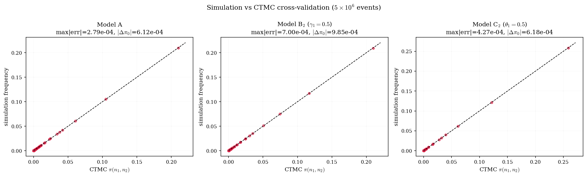
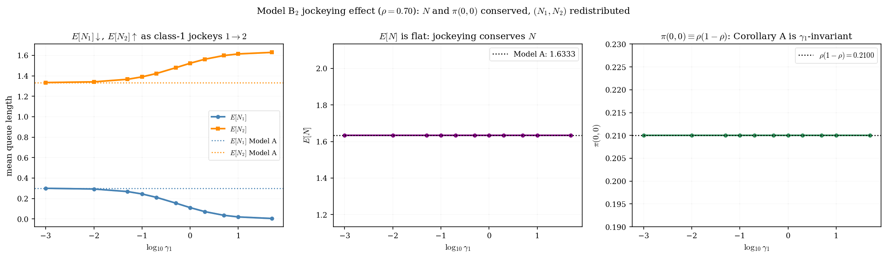
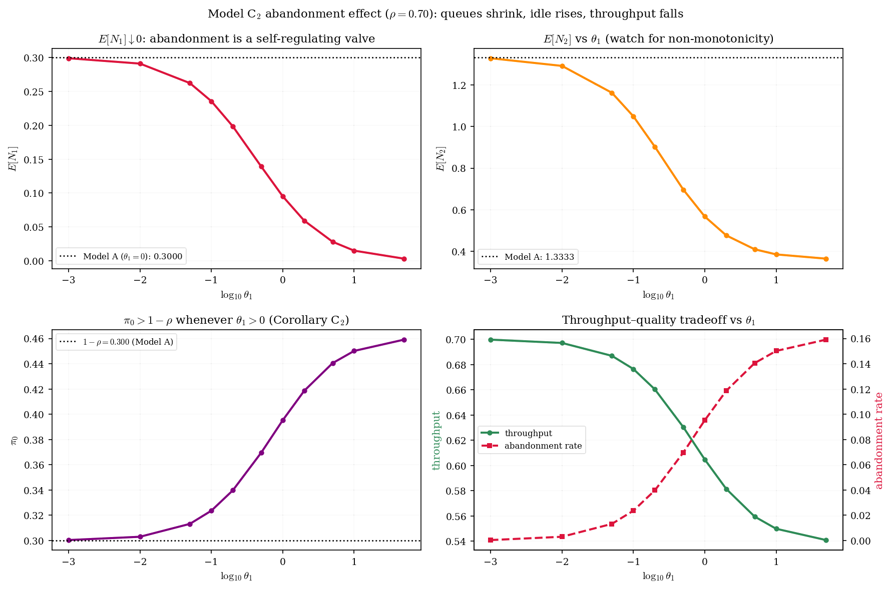
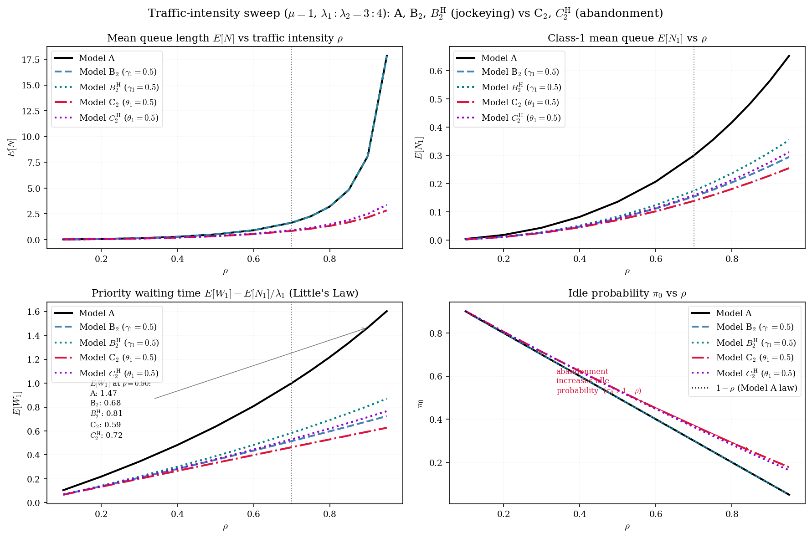

In elderly-care admission, medical severity sets a customer's priority class. But waiting is not passive: deteriorating health can push a waiting customer to change class or to leave the system — for alternative care, or through death.
How do jockeying and abandonment interact within a priority discipline — and how does that interaction affect our ability to solve the queue in closed form?
Erlang-A (Garnett et al., 2002); Kapodistria (2011) — exact priority-plus-reneging stays multi-server and waiting-time based.
the special-function toolkit
Cohen (1956); Zuk & Kirszenblat (2023) — exact, but mechanism-free: nobody moves, nobody leaves.
the methodological ancestors
de Waal (1992) treats it approximately; Hu, Chan & Dong (2022) study it asymptotically, multi-server.
the applied motivation
The gap: an exact, single-server treatment admitting both mechanisms in one bivariate-PGF framework.
The busy period returns later as the effective service time a class-2 customer experiences: the server must first drain the class-1 queue.
Stable for every load — the departure rate μ+nθ grows without bound, so no ρ<1 is needed.
The confluent hypergeometric function — the entire solution of Kummer's equation z u″+(b−z)u′−a u = 0 that is regular at z = 0.
The integral form is the one that returns: Models B₂ and C₂ recover Py as exactly this Beta-weighted integral of ezt.
Transform only the hard direction, keep the easy class discrete: the priority class is often a plain M/M/1, so spend the analytical effort on class 2 alone. This idea powers Part IV.
Jockeying and abandonment act on every waiting customer, so their aggregate rate is length-proportional: γ₁n₁, θ₁n₁. A factor n₁ under the transform is precisely a derivative:
This single mechanic decides the difficulty of every model in the thesis.
Poisson arrivals λ₁, λ₂; common exponential service μ; the server never interrupts a service in progress. Every waiting customer carries independent exponential jockeying and patience clocks.
n₁, n₂ count customers waiting — the one in service is excluded. Its class never matters: memorylessness makes the residual service Exp(μ) either way.
Why S̃? Under jockeying neither class is simple on its own — but the total is: jockeying conserves it. Part IV tests whether that helps.
A cut between idle and busy, plus renewal–reward over busy cycles: everything reduces to one scalar, the mean busy period E[B]. Without abandonment, E[B]=(μ−λ)⁻¹ gives π₀=1−ρ, π(0,0)=ρ(1−ρ).
Plus three boundary families (n₁=0; n₂=0; the empty state) and the idle cut (λ₁+λ₂)π₀ = μπ(0,0). The length-proportional rates γᵢnᵢ, θᵢnᵢ are what become derivatives.
No derivative terms. The kernel vanishes on a curve; evaluate at the root x*(y) inside the unit disc.
The singularity sits at the diagonal point x=y, with negative exponent: analyticity there pins P_y(y).
The singularity moves to x=1 on the unit circle, with positive exponent: mere boundedness suffices.
Constant rate 1{n₁≥1} removes the derivative outright — back to Model A's algebraic form.
Proof. flux cut λπ₀ = μπ(0,0) between the idle and busy states · renewal–reward over regeneration cycles at the empty state — exact for every (γᵢ, θᵢ). Everything reduces to one scalar, E[B].
Take θ₁ = θ₂ = 0 and ρ < 1. Jockeying only relocates waiting customers, so the total count is a plain M/M/1 birth–death process and E[B] = (μ−λ)⁻¹. Theorem 4.1 then gives
One corollary, four models: these constants anchor every no-abandonment proof in Part III; the diagonal trace P(z,z) is the anchor Model B's Volterra route relies on.
| Model | Active mechanism | Equation type | Status |
|---|---|---|---|
| X | jockeying & abandonment | PDE · ??? | |
| A | none — baseline | algebraic PGF | |
| B | bidirectional jockeying | PDE · Volterra family | |
| B₂ | one-way jockeying (1→2), γ₁n₁ | ODE in x · Kummer | |
| C₂ | class-1 abandonment, θ₁n₁ | ODE in x · Kummer | |
| Bᴴ | jockeying, head-of-line γ₁·1{n₁≥1} | algebraic PGF | |
| Cᴴ | abandonment, head-of-line θ₁·1{n₁≥1} | algebraic PGF |
The algebraic coefficient of P vanishes on a curve. Evaluating there forces the RHS to vanish and pins the unknowns.
Models A, Bᴴ, Cᴴ.
A surviving ∂/∂x term gives a first-order linear ODE in x; a regularity demand at its singularity fixes the constant.
Models B₂ (analyticity), C₂ (boundedness).
Class 2 is an M/G/1 queue whose service time is a class-1 busy period — an independent confirmation.
Models A, C₂. Jockeying destroys it.
Fix y and find the root x*(y) of the kernel inside the unit disc. P is bounded there, so the LHS vanishes — hence the RHS must too:
Proved twice. kernel method (analytic) · Poisson splitting + PASTA (probabilistic) — the two routes meet in the same root x*(y). Classical result, recovered as calibration for everything that follows.
Both convection terms carry (x−y): the Method of Characteristics applies, along the straight lines
And jockeying destroys the Poisson split of arrivals — the probabilistic route is gone too.
The forcing depends on the unknown boundary itself. Inverting it needs tools beyond this thesis — Model B is left open, and it is the representative of every model with a ∂/∂y term, Model X included.
The integrating factor has a singularity at the interior point x=y with negative exponent β(y). A PGF must be analytic there — that single demand determines P_y(y).
𝓗₁ weighs P_y(y); 𝓗₂ weighs (1−y)π(0,0) — exponents traded between t = 0 and t = y.
Queue 1 alone is the Erlang-A of Part I; class 2 sees an M/G/1 whose service time is its busy period B_C. Stability is genuinely non-trivial:
with a = μ/θ₁, b = s/θ₁, c = λ₁/θ₁, and s = λ₂(1−y).
Let only the customer at the head of Queue 1 jockey or abandon: the rate becomes the constant γ₁·1{n₁≥1} (resp. θ₁·1{n₁≥1}), and the mechanism joins the kernel as an algebraic term:
Both are solved by the Kernel Method exactly as Model A. For Cᴴ even stability relaxes: (μ+θ₁)(μ−λ)+λ₁θ₁ > 0 — weaker than ρ < 1.
Proof. the constant rate γ₁·1{n₁ ≥ 1} joins the kernel as an algebraic term — no derivative survives, and the Kernel Method runs exactly as for Model A. CTMC check: max error < 3×10⁻⁷ on a 5×5 grid. As γ₁ → 0⁺ the formula collapses to Theorem 5.1.
Proof. Kernel Method again — abandonment enters the kernel as the algebraic term θ₁y(x−1). CTMC check: max error < 3×10⁻¹¹ on a 5×5 grid. As θ₁ → 0⁺ the formula recovers Theorem 5.1 exactly.
Arrivals now move diagonally (λ₂ raises both n₂ and n); jockeying moves horizontally at fixed n; the diagonal n₂ = n means all waiting customers are class 2 — it will matter.
Transform only n₂ and keep the total n discrete: P̃(y,n) = Σ π̃(n₂,n)y^n₂, a polynomial of degree n.
A differential–difference equation: levels n−1, n, n+1 are coupled — plus one forcing term.
The forcing term μyⁿ(1−y)π̃(n+1,n+1) feeds in the diagonal states — all waiting customers class 2. Those probabilities are exactly what we are solving for: the recurrence does not close on itself.
Instead of collapsing 2-D balance to a 1-D recurrence, the change of coordinates makes things harder — for every model with an active mechanism, S̃ is strictly worse than S.
Even then it is an approximation, not a theorem — accurate only where the forcing decays faster than the solution, ρ < ỹ*(y): a priority-heavy, moderate load. At y=1 it does recover the M/M/1 marginal (1−ρ)ρⁿ⁺¹.




| A | B₂ | Bᴴ | C₂ | Cᴴ | |
|---|---|---|---|---|---|
| Mechanism rate | none | γ₁n₁ | γ₁·1{n₁≥1} | θ₁n₁ | θ₁·1{n₁≥1} |
| Fundamental eq. | algebraic | 1st-order ODE | algebraic | 1st-order ODE | algebraic |
| Pinning of P_y | kernel root x* | analyticity at x=y | kernel root x* | boundedness at x=1 | kernel root x* |
| P(x,y) form | rational | integral + ₁F₁ | rational | integral + ₁F₁ | rational |
| Conserves N | yes | yes | yes | no | no |
| π(0,0) | ρ(1−ρ) | ρ(1−ρ) | ρ(1−ρ) | Cor. 8.2 | Cor. 10.2 |
Head-of-line rates collapse the ODE back to the algebraic form — P(x,y) becomes rational again.
As its mechanism rate → 0⁺, each specialisation must recover Model A. The L1 distance ∥π−π_A∥₁ falls first-order: log–log slopes of 0.85–0.93 against the theoretical 1, the shortfall explained by CTMC truncation.
π₀ and π(0,0) stay pinned at 1−ρ and ρ(1−ρ) for every γ₁ — convergence is invisible at the empty states and happens entirely in the interior.
A true departure moves the idle descriptors above the baseline; they relax back onto it only as θ₁ → 0⁺. The conservation dichotomy, one last time.
Kernel root inside the disc (A) · analyticity at x=y (B₂) · boundedness at x=1 (C₂) · head-of-line collapse (Bᴴ, Cᴴ) — the four ways P_y(y) gets pinned.
The obstructions: a ∂/∂y term forces a first-kind Volterra equation (B); Model X adds transcendental characteristics on top.
Jockeying redistributes delay at fixed total work; abandonment reduces the load itself. Same waiting room, opposite registers.
Let the first k customers act: min(n₁,k) keeps the equation algebraic at the price of k boundary unknowns; expect convergence to B₂ / C₂ as k→∞.
Model B's kernel and forcing are explicit — numerical inversion (or sharper analysis) would close the first obstruction.
Differentiate at (1,1) — with L'Hôpital at the x=1 singularity — to replace the numerical E[Nᵢ], E[Wᵢ] with closed forms.
The 2→1 upgrade of a deteriorating patient is exactly γ₂ > 0 — the Volterra-hard direction. Calibration to elderly-care data comes after.